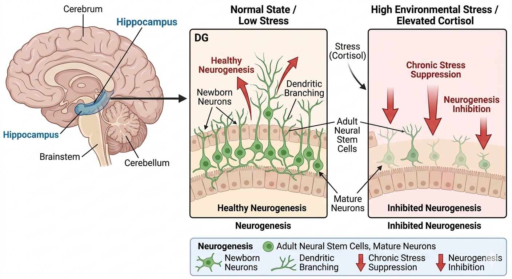
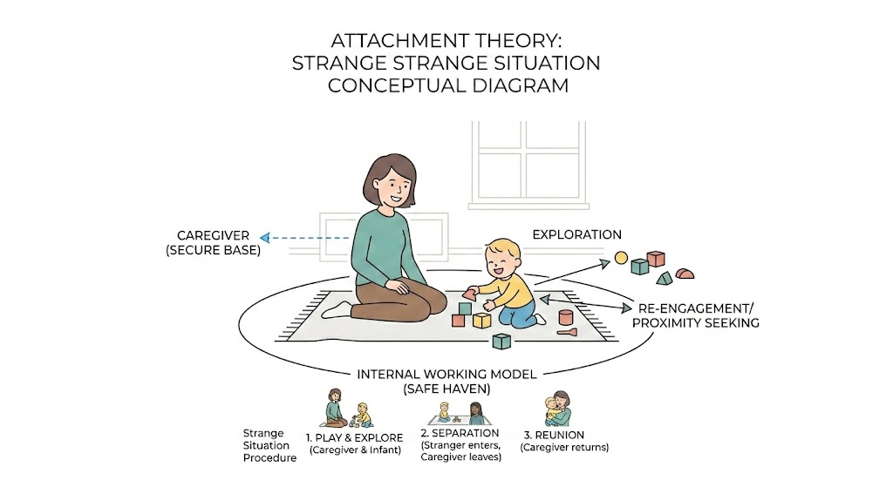
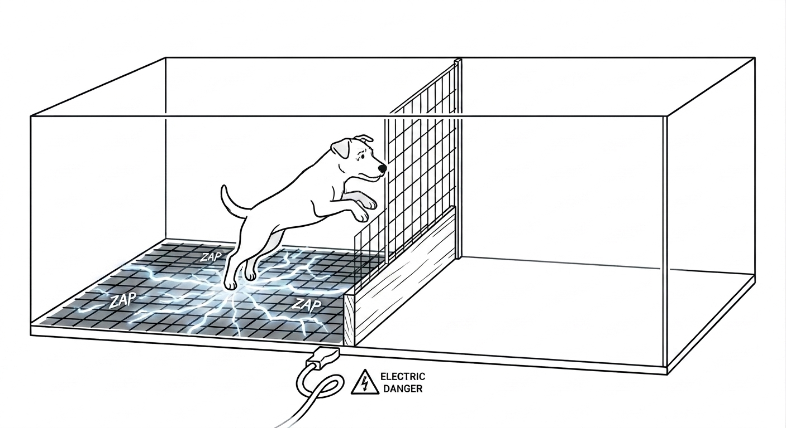

自分はどう作られるか ―アタッチメントと内的ワーキングモデル―
私たちが「自分」という存在を感じ、情動や記憶を司る脳の中枢に海馬（Hippocampus）があります。近年の神経科学の研究により、この海馬は発達の初期段階において、周囲の環境やストレスに対して極めて脆弱であることが明らかになっています。

ラットを用いた有名な実験では、養育者から引き離された環境で育った個体は、そうでない個体と比較して海馬の神経細胞増殖量（神経新生）が有意に低下していました。これは単に「一時的に元気がなくなる」というレベルではなく、脳の物理的な構造そのものが、過酷な環境に適応しようとして恒久的に変化してしまうことを意味しています。私たちが「自分」をどう作り上げるかという物語は、私たちがまだ言葉を持たない、記憶すら定着していない「幼少期の環境」という名の筆で、脳の深部に静かに描き込まれているのです。
特定の他者（主に養育者）との間に形成される情緒的な絆をアタッチメント（Attachment）と呼びます。アタッチメントは、ただの「仲良し関係」ではなく、人間の生物学的な生存戦略です。メアリー・エインズワースのストレンジ・シチュエーション法によれば、養育者と分離・再会した時の子供の行動から、その愛着のタイプが分類されます。

安定した愛着が形成されると、その養育者は子供にとっての安全基地（Secure base）として機能します。ここから外の世界へと探索活動を行い、不安を感じればすぐ戻ってこられる場所があるからこそ、人間は自律的な社会性を獲得できるのです。
幼少期の愛着関係を基盤に、子どもの脳内には内的ワーキングモデル（Internal Working Model: IWM）という「心の設計図」が構築されます。これは、「自分は他者から大切にされる価値がある存在か」「他者は自分を助けてくれる信頼できる存在か」という、自分と他者に対する無意識の期待です。このモデルは3歳以前の記憶がほとんどない「幼児期健忘」の時期に作られるため、自分では意識できません。しかし、この無意識の「眼鏡」を通して、私たちはその後の人生のあらゆる人間関係を解釈し、行動を選択してしまうのです。
小学校や高校で「人は支え合って生きるものだ」といった道徳の授業を受けたことがあるかと思います。当時は綺麗事に聞こえたかもしれません。しかし、心理学的に見れば、これは「アタッチメントが構築された安定型個体は、社会の中で安全基地を相互に提供しあうことで、個人の探索行動を促進させる」という非常に合理的な社会戦略を教えていたと言えます。
また、家庭科で学んだ「乳幼児の発達段階」における愛着形成の知識は、皆さんが将来、自らの家族や職場、コミュニティでリーダーシップを発揮する際の「他者の行動原理」を理解するための極めて強力なリテラシーとなります。
最後に、マーティン・セリグマンが提唱した学習性無力感（Learned helplessness）について触れます。コントロール不可能なストレスを受け続けると、人間や動物は「何をしても無駄だ」という学習をし、本来逃げ出せる状況になっても、そこから脱出する努力を放棄してしまいます。

私たちの脳は30万年前のサバンナの環境に適応するように作られています。サバンナでは「努力が報われない」状況は即座に死を意味したため、無力感を感じるのは生存のための防衛反応でした。しかし、現代の複雑な社会システムでは、この「サバンナ用に最適化された脳の反応」が、かえって私たちの意欲を削ぐエラーとなって現れます。自分がどのような「物語（モデル）」を持っており、何に対して無力感を感じやすいのかを客観的に自己理解することは、このエラーを修正し、現代を生き抜くために最も重要な心理学的アプローチです。